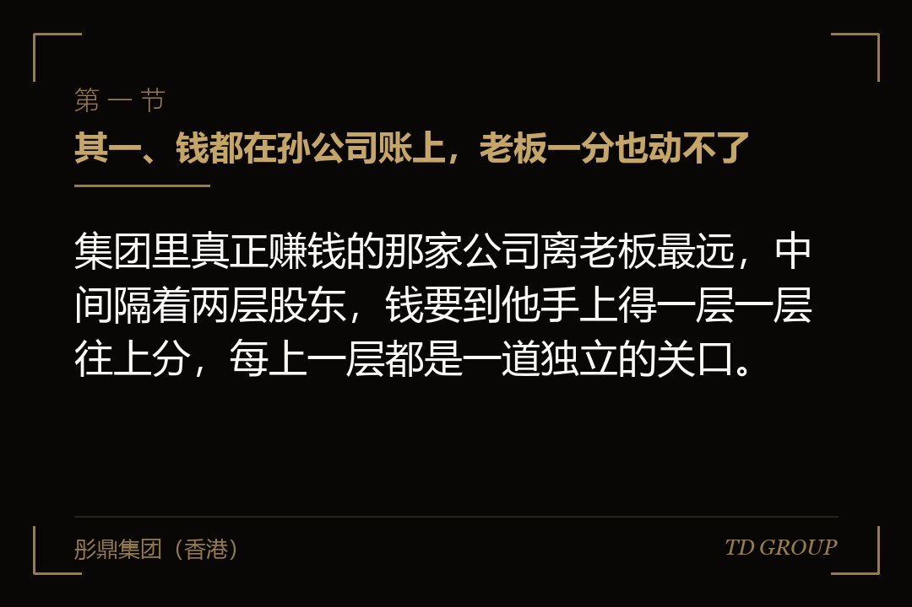
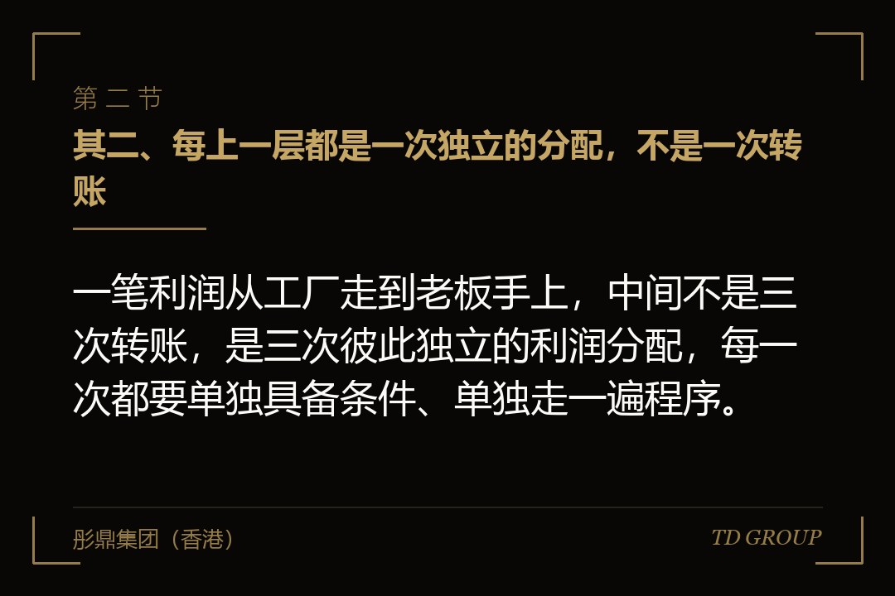
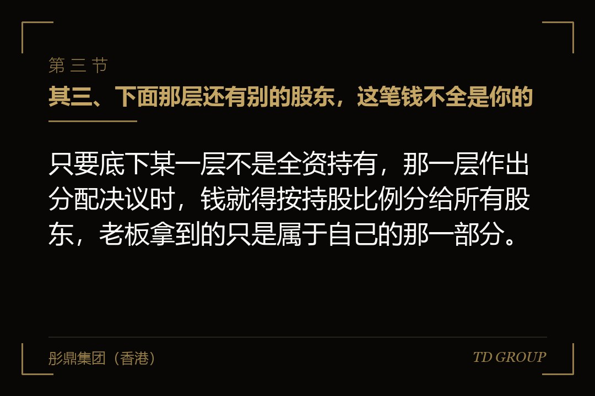

其一、钱都在孙公司账上，老板一分也动不了

结论先行：集团里真正赚钱的那家公司离老板最远，中间隔着两层股东，钱要到他手上得一层一层往上分，每上一层都是一道独立的关口。
假设有家做精密零件的企业。老板本人持有一家控股公司，控股公司下面是一家平台公司，平台公司再往下，才是那家真正接单、开票、赚钱的工厂。那年工厂账上趴着六千多万，老板想拿两千万出来，一半置产，一半投一个新项目。
财务告诉他，这两千万现在动不了。工厂要往上分，先看工厂自己的账；平台公司收到之后再往上分，又要看平台公司的账；控股公司再分到他本人名下，还有一道。三层三次分配，三次都要各自的股东会作出决议。
老板的反应和多数人一样：这三家不都是我的公司吗。法律上不是。每一层都是独立的法人，它账上的钱是它的钱，不是股东的钱。股东能拿走的，只有走完法定程序、被确认为可供分配利润的那一部分。
他最后换了个办法，让工厂当天打了两千万到自己卡上，账上挂"其他应收款——股东"。三年后这家企业开始融资，投资人的尽调报告里，这笔往来款单独占了一段，交割条件里也写着它。
先把边界划清楚。控股层该不该设、设在哪一层，是架构设计的另一个题目；钱走个人账户、关联方资金往来、跨境资金、转让定价、员工持股平台、分公司还是子公司、重组的税务处理，各自都有专门的讨论，本文不展开。这里只讲利润从最底下那层往上走的那条路。
其二、每上一层都是一次独立的分配，不是一次转账

结论先行：一笔利润从工厂走到老板手上，中间不是三次转账，是三次彼此独立的利润分配，每一次都要单独具备条件、单独走一遍程序。
头一个条件，是这一层公司自己有可供分配的利润。会计上的净利润不等于可以分的钱，先要把以前年度的累计亏损补上；亏损没补完，当年赚的先拿去补，补完还有剩，才轮到往下谈。
第二个条件是提取法定公积金。公司当年的税后利润要按规定比例先提一笔留在公司里，累计到注册资本的一定比例之后才可以不再提取。这一笔留下来是为了增强公司自身的偿债能力，它不参与分配。
第三个条件是决议。分不分、分多少、什么时候分，由该层公司的股东会作出决议，董事会拟定方案。没有决议就把钱划走的，那不是分红——它在账上只能挂成往来款，性质完全不同。
第四件事是钱本身。账面上有利润，不等于账户上有钱。利润可能早就变成了应收账款、存货和在建工程。很多老板卡在这一关：报表上写着一个亿的未分配利润，账户上只有三百万现金，两个数说的不是同一件事。
这四件事在每一层都要重来一遍。工厂做一次，平台公司做一次，控股公司再做一次。任何一层缺一件，钱就停在那一层。更麻烦的是它在合并报表上看不出来——合并报表把内部往来抵消掉了，显示的是集团整体的家底，不是某一层现在能不能分钱。具体的提取比例与分配顺序，以公司法和各层章程的原文为准。
其三、下面那层还有别的股东，这笔钱不全是你的

结论先行：只要底下某一层不是全资持有，那一层作出分配决议时，钱就得按持股比例分给所有股东，老板拿到的只是属于自己的那一部分。
接着上面那家企业往下说。假设工厂当年为了拿一笔设备投入，让一家产业方进来占了两成，平台公司持八成。工厂往上分五千万，产业方按持股比例分走一千万——这一千万出了集团，不会再回来。
老板通常的反应是干脆不分，或者只分一个很小的数。短期走得通，长期会出事：小股东如果认为公司连年盈利却不作分配，可以按法律规定的条件要求公司收购自己的股权，也可以就股东会决议本身提起诉讼。
于是更常见的做法是绕开分配：工厂给平台公司付一笔管理费，或者平台公司从工厂借一笔钱。钱确实上去了，小股东那一部分没分出去。在小股东眼里，这就是把本该分给他的那块拿走了——他一旦较真，这两笔的商业实质要经得起解释。
同样的情形也会出现在员工持股平台、早期投资人和当年的技术入股股东身上。他们的持股比例可能只有几个点，但在分配这件事上，几个点和几十个点适用的是同一套规则。
所以外部股东放在哪一层，是一个跟分红直接相关的决定。放得越靠下，那一层此后的每一次分配都要带上他；放在顶层，中间几层的资金上行就干净得多。这件事要在引入投资人之前想清楚，之后再调就是股权变动。少数股东的具体权利与行使条件，以公司法和公司章程的原文为准。
其四、中间有一层自己是亏的，钱就停在那里
结论先行：多层架构里最常见的堵点，是中间那家不做业务的控股公司自己账上是亏的——它收到下面分上来的钱，也分不出去。
中间控股层通常不经营业务，只持股。它自己没有收入，开支却一样不少：审计费、人员、办公、有时候还有一笔借款利息。年复一年，它账上累积的是亏损。
上一章那个头号条件就卡在这里。它收到下面分上来的利润，先得拿去补自己的累计亏损，补完才谈得上继续往上分。亏损足够大的时候，下面分上来多少，就在这一层沉下去多少。
假设那家平台公司成立六年，每年亏两三百万，累计亏了一千五百万。工厂往上分五千万，其中一千五百万先把这个洞填上，剩下的才继续往上走。老板看到的是"分了五千万，到我名下只剩三千多万"，那一千五百万并没有丢，它变成了这一层的账面修复。
反过来也有一种情形：中间层因为历史上的一笔对外担保、一场诉讼或者一次减值，账上挂着一个大窟窿。这种时候资金上行会长期停摆，而且它不报错——每一层的账都是合规的，只是钱到不了顶。
这也是为什么有的集团宁可让下面几家经营公司平行地挂在顶层，而不是叠成三四层。每加一层，就多一次前面那四件事的检验，也多一份要长期养着的成本。
其五、专门设一层来归集：它解决什么，又带来什么
结论先行：设一层公司专门归集下面几家的利润，解决的是资金调度和再投资的效率，带来的是多一次分配条件的检验和一层要长期养着的成本。
归集层的好处很具体。集团下面有五家经营公司，三家赚钱两家烧钱，钱各自停在各自账上，赚钱那三家的现金没办法投到需要的地方去。有一层归集，资金调度就有了一个法律上说得清的落点。
再投资是同一个道理。利润上翻到归集层，再由归集层向下增资到新项目，整个动作在集团内部完成，不必经过股东个人的口袋。这一步在很多老板那里被跳过了：钱先到个人卡上，再从个人卡投出去，那是完全不同的一件事。
代价也很清楚。归集层自己要建账、要审计、要报税、要有人管；它自己的累计亏损会形成上一章那个堵点；多出来的那一次分配决议，也意味着每年多走一遍程序。
更容易被忽略的是控制权。归集层的股东会怎么组成、谁签字、章程怎么写，直接决定下面几家的钱能不能顺畅上来。有的集团架构图画得很漂亮，归集层的公章和网银却在一个已经离场的老搭档手里。
判断该不该设这一层，看三件事：下面有没有多家经营主体、有没有跨主体调度资金的真实需要、顶层股东是不是不止一个人。只有一家经营公司、股东就老板一个人，多叠一层通常只是多一道手续。至于它设在哪一步、放在境内还是境外，属于架构设计的题目。
其六、很多老板实际在走的三条路，和它们各自的代价
结论先行：分红这条路太慢，于是多数老板改走股东往来款、管理费与服务费、公司代垫个人开支这三条，而它们在尽调和审计里各有固定的识别方式。
头一条是股东往来款。工厂直接打钱给老板，账上挂"其他应收款——股东"。钱当天就到，程序一步不用走。问题在于它不会自己消失：这笔挂账在报表上是一项资产，年年在那儿，往往还越挂越大。
审计上的处理很成熟。长期挂账、没有借款合同、没有约定归还期限、也不计利息的股东借款，会被要求说明用途和还款安排；如果实质上就是一次分配，还可能被要求按分配处理，补缴相应税款并计算滞纳金。
第二条是管理费与服务费。上层公司向下面的经营公司收一笔管理费、品牌使用费或者咨询服务费，钱就名正言顺地上去了。这条路本身是成立的——集团内部确实存在真实的管理和服务，总部养的那些人也确实在为下面干活。
它站不站得住，看三样：有没有真实发生的服务、有没有能对应上的证据（人员、工时、成果、合同），以及收费水平跟服务内容匹不匹配。三样都拿不出来的，在税务检查里可能被认定为不具有合理商业目的，付钱那家不得在税前扣除，收钱那家还得确认收入。
第三条是公司代垫个人开支。房子、车子、家里人的开销、私人行程，全走公司账。这一条的性质跟前两条不一样：它不是程序上的瑕疵，是把公司财产和股东个人财产混在了一起。
后果有两层。税务上，公司为股东个人支付的、与经营无关的开支，可能被按对股东的分配处理；法律上，一人公司的股东如果不能证明公司财产独立于自己的财产，要对公司债务承担连带责任——这一条比补税重得多，它击穿的正是当初设这几层公司的初衷。
三条路有一个共同点：都是把今天省下的程序挪到以后去还。企业只有一个股东、不融资也不上市时确实看不出问题；一旦有外人进来看账，三条会在同一周里一起显形。
其七、顶上那层在境外时，多出来的一道
结论先行：顶层股东或者控股公司在境外，利润上翻会多出一段跨境环节，它是外汇、税务和商业实质三件事叠在一起，不是多填一张表那么简单。
机制先说清楚。境内公司向境外股东分配利润属于对外支付，办理时要看的是一条完整的依据链：股东会决议、经审计的财务报表、完税凭证，以及这家境内公司的注册资本实缴情况。材料链条缺一环，这笔钱就付不出去。
第二件事是税。境内公司向境外股东分配，通常在支付环节就要代扣代缴；境外股东所在地与内地之间如果有相应的税收安排，能不能适用、按什么条件适用，取决于它是不是这笔所得真正的受益方，也看它在当地有没有真实的经营和人员。本文只讲机制，具体以税法与征管口径为准。
第三件事是实质。一家只有注册地址、没有人员和办公场所的境外控股公司，在很多环节都会被追问它到底承担什么职能、承担什么风险、由谁作决策。这件事该在设立那一天就想好，而不是等到要分钱的那一年临时去补。
还有一个顺序问题常被忽略：境内的利润要往境外走，前提是境内那几层已经先把各自的分配做完。跨境是最后一段，不是一条捷径——底下几层没走通的，卡点仍然在境内。
跨境资金往来、转让定价与境外主体的实质要求，各自都有专门的讨论，本文不展开。这一章只交代一件事：顶层在境外，上面那条路要多走一段，而这一段对材料的要求比境内每一层都严。
其八、投资人一进场，这几笔历史往来会被逐条翻出来
结论先行：融资和上市会把前面那三条路一次性顶到台面上，往来款要清、费用要有依据、公私账要分开，而那时清理的成本，远高于当初省下的程序。
尽调的顺序几乎是固定的。看完股权和主营业务，接下来就是往来款科目和关联交易。挂在其他应收款上的股东借款、上下层之间的管理费、报销单据里的个人开支，这三样是同一批人在同一周里就能看完的东西。
回到开头那家精密零件企业。那两千万一直挂在账上，投资人给的条件很直接：交割前清零，并说明这三年的资金占用情况。老板得先把两千万还回工厂，而这笔钱早已变成了不动产——最后是抵押那处房产借钱还进去的，利息和时间都是当初没算过的账。
补税是更麻烦的一层。这笔往来款如果被认定为实质上的分配，要补的不只是税款还有滞纳金；而补缴通常发生在融资前夜，交易文件里往往还要加一份专门的承诺，由老板个人为历史税务问题的后果兜底。
服务费那一条会被要求补证据。三年前收的那笔管理费，当时只有一张发票和一份两页纸的协议，现在要补出人员、工时、成果和定价依据。补得出来的补，补不出来的只能调账，而调账又牵动前几年的报表。
上市那一步的口径更严：报告期内的资金占用、关联交易的必要性与定价公允性、内控是否有效，都要在申报材料里正面回答。历史上的资金占用通常要求在申报前彻底清理并如实披露，而披露本身就意味着审核会追着问。
现在做便宜、拖到那时候做很贵的，有这么几件：把每一层的分配决议和会计处理补齐并一直保持；把已挂账的股东往来定性清楚、定出还款安排并真的执行；把管理费和服务费落到有人、有事、有成果、有定价依据的形态上；把公司账和个人账彻底分开；引入外部股东之前先想清楚他放哪一层。
我们跟华尔街俱乐部有合作，这类多层架构的案子见得多一些，真正在融资那一步被卡住的，问题往往不在当年拿走的那笔钱，而在当年没走的那几道程序。
最后留一个问题。假设你就是开头那家企业的老板，账上六千多万、往上还隔着两层，现在要拿两千万出来：你是花上三个月，把三层的分配从决议到完税一次做干净，还是先挂一笔往来款，等以后融资的时候再说？